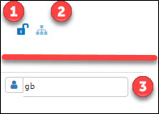
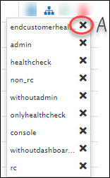

Local dashboard actions

|
Number |
Description |
|
1 |
By default, the dashboards are private.
Click on the private/public icons to toggle between them. Public: By making a dashboard public, you can expand the visibility of the dashboard to all the roles that are associated with the dashboard. Private: By making a dashboard private, you can restrict the visibility of the dashboard to the dashboard owner alone. To know more about roles and permissions, click here. |
|
2 |
Click here to view the roles that are assigned to the corresponding dashboard. Association of roles to the dashboards is a global action. However, the dissociation of roles with the dashboards needs to be done at each dashboard level. Following is the screen shot of the list of roles associated with a dashboard. 
Note: When the dashboard ownership changes from one internal user to another internal user, the new owner’s corresponding role is automatically assigned to the dashboard. |
|
3 |
By default, the internal user who created the dashboard is the owner of the dashboard. Click here to open a dropdown list of all the internal users who have the following:
Select from the dropdown list - a user to whom the dashboard ownership has to be transferred. Note: When the dashboard ownership changes from one user to another user, the new owner’s corresponding role is automatically assigned to the dashboard. |
|
Know more about Roles and Permissions |
|
Created with the Personal Edition of HelpNDoc: Free Kindle producer